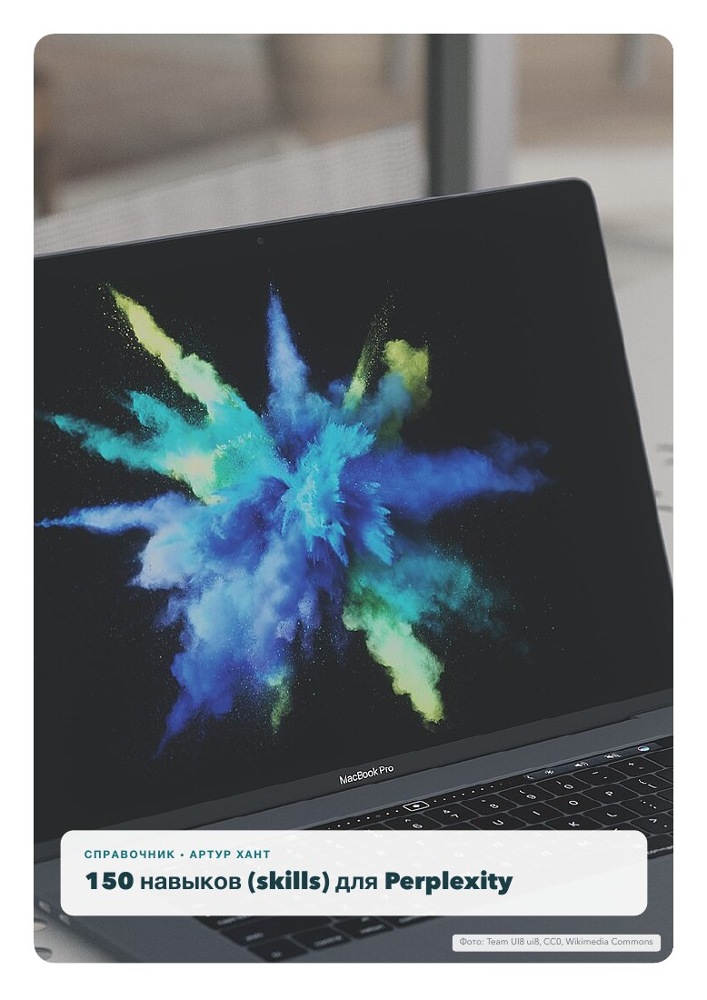
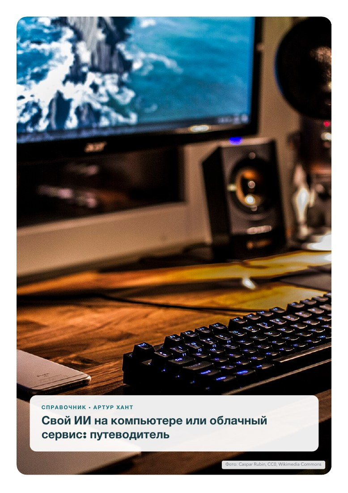
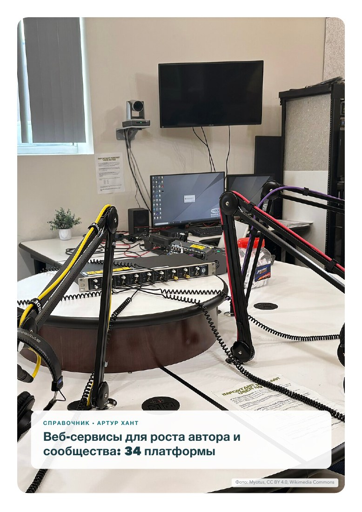
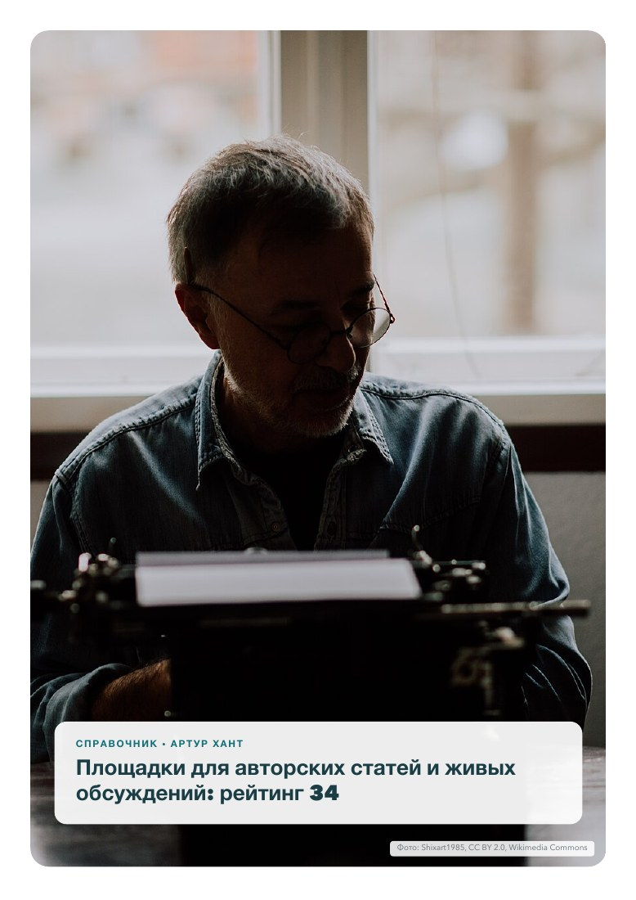
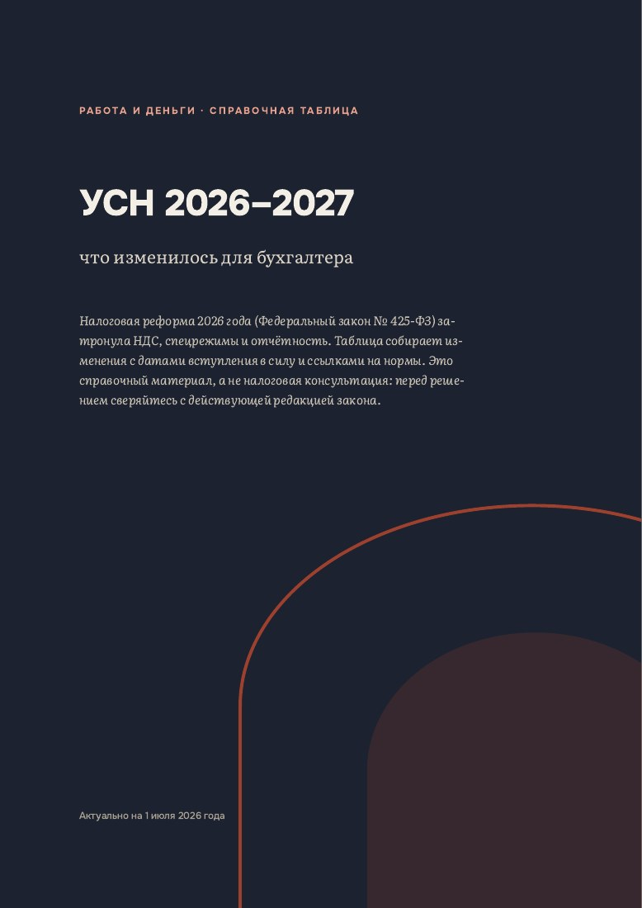

Все справочники
Все текущие материалы бесплатны. На каждой карточке указана дата проверки: чем она свежее, тем точнее цены, условия и ссылки.
 Приватность ИИ
Приватность ИИ
Приватность ИИ-сервисов — 6 шпаргалок
ChatGPT, Claude, Gemini, NotebookLM, Perplexity и ElevenLabs: что хранят, на чём учатся и где это выключить.
 ИИ на практике
ИИ на практике
Claude Skills — 142 сценария
142 навыка, на каждый — 2 страницы: готовые просьбы, установка, польза и риски. Разделы для 6 групп читателей и что важно знать в России.
 ИИ на практике
ИИ на практике
Claude Connectors — 100 интеграций
Как подключить ассистента к заметкам, почте, задачам и GitHub, какие права давать. Разделы для 6 групп читателей и российские аналоги.

ИИ на практикеPerplexity — Skills и Connectors
Два справочника: 150 сценариев и 100 интеграций. Разделы для 6 групп читателей и что важно знать в России.

ИИ на практикеСвой ИИ на компьютере или облачный сервис — путеводитель
Что поручить ИИ в офисе, сервисы в России, какие данные нельзя отдавать в облако, оборудование и цены.
 Учёба и карьера
Учёба и карьера
Учёба в ведущих университетах США — путеводитель 2026/27
Экзамены, 27 вузов с рейтингами, 37 специальностей, стипендии для студентов из России, визы, жильё и правила об ИИ.
 Учёба и карьера
Учёба и карьера
Сертификации по информационной безопасности — путеводитель для России
14 экзаменов, российские сертификации и переподготовка, как сдать из России и зарплаты по городам.
 Цифровые навыки
Цифровые навыки
15 программ для анализа места на диске Mac
Что именно занимает место на диске и чем это быстро найти.

Автору и бизнесуВеб-сервисы для роста автора — 34 платформы
Где разместить книги, курсы и рассылку, чтобы выйти на англоязычную аудиторию.

Автору и бизнесуПлощадки для авторских статей — рейтинг 34
Где статьи живут годами как архив, а где собирают живое обсуждение.
 Автору и бизнесу
Автору и бизнесу
Платформы блогов, СМИ и форумов 2026
26 издательских платформ и 12 форумных систем по 20 критериям с весами.

Автору и бизнесуУСН 2026–2027: изменения для бухгалтера
Налоговая реформа по закону № 425-ФЗ в двух таблицах — на 2026 и 2027 годы.
 Кругозор
Кругозор
Документальное кино о сети, власти и доверии
Каталог в трёх частях: 86 фильмов и сериалов о том, как устроены интернет, пропаганда и доверие.
КругозорТезисы и их подтверждения через 10 дисциплин
Шесть популярных убеждений, проверенных аргументами философии, социологии, психологии, истории и права.
 Кругозор
Кругозор
«Тёмная материя» и мышление в «суперпозиции»
Обзор и подборка книг и сериалов о выборе, сожалении и параллельных версиях жизни.
Ничего не нашлось. Попробуйте другое слово или напишите мне — возможно, это тема для следующего справочника.
Не нашли нужную тему?
Напишите в Telegram или ВКонтакте, о чём сделать следующий справочник. Самые частые запросы попадают в план первыми.